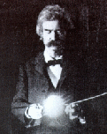
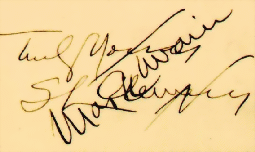

Mark Twain: His Marks
Huckleberry Finn spends most of his story wearing assumed names: Sarah
Williams, George Peters, Charles William Allbright, Gorge Jaxon, Adolphus, even
Tom Sawyer. Yet most readers feel he remains, as he signs himself at the end,
"truly Huck Finn." On the other hand, I don't know how Samuel Clemens/Mark Twain
"truly" identified his self to himself. The display below indicates the
impressive variety of ways he signed himself to others. Clicking on any of the
signatures in the table below takes you to the letter or other document it
appears on, embedded in a brief discussion (based on my limited study of MT's
correspondence) of how SC/MT tended to use that particular name. Don't look for
consistency. Between 1872 and 1910, for instance, he wrote hundreds of letters
to W.D.Howells. He signed most "Yours ever, Mark." But he signed some "Yours
ever, Clemens," and on others used "Saml. L. Clemens," "S.L.C," "S.L.Clemens,"
and "Twain" as signatures. (Howells, who almost always signed himself
"W.D.Howells," addressed his friend as "My dear Clemens.") And at least two
significant signifiers aren't here: the Barret Collection has no letters to
Livy, but according to The Love Letters of Mark Twain, he signed the
scores of letters he wrote his fiancee as "Saml. L. C." and the hundreds he
wrote to his wife as "Saml."

